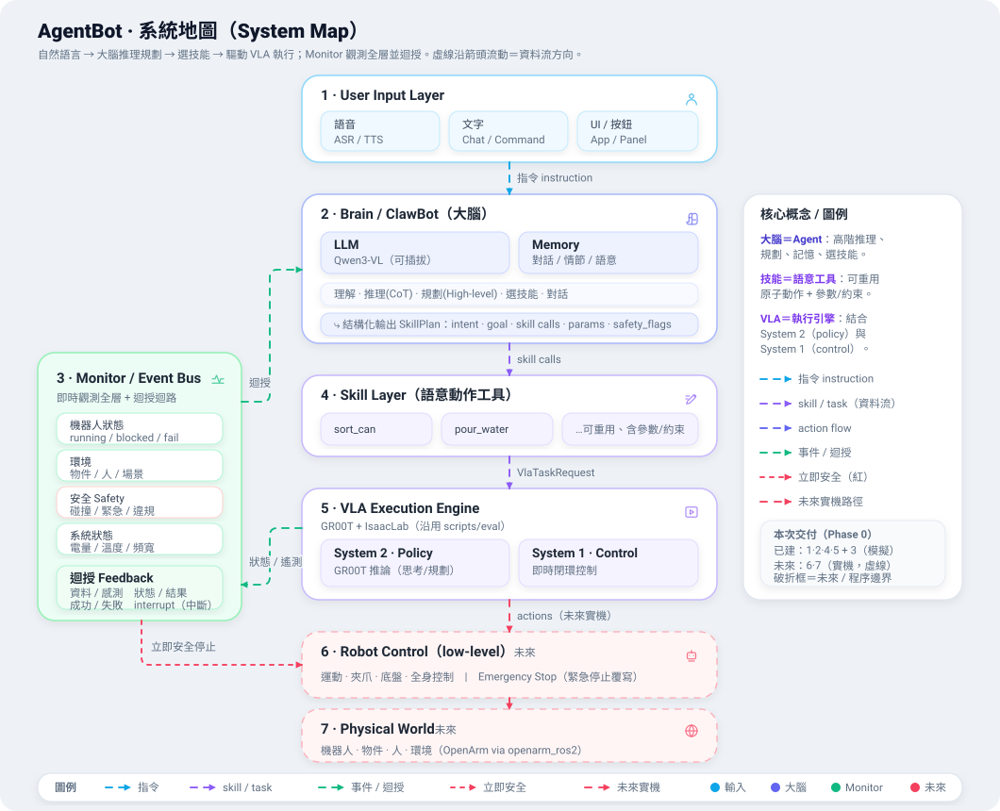
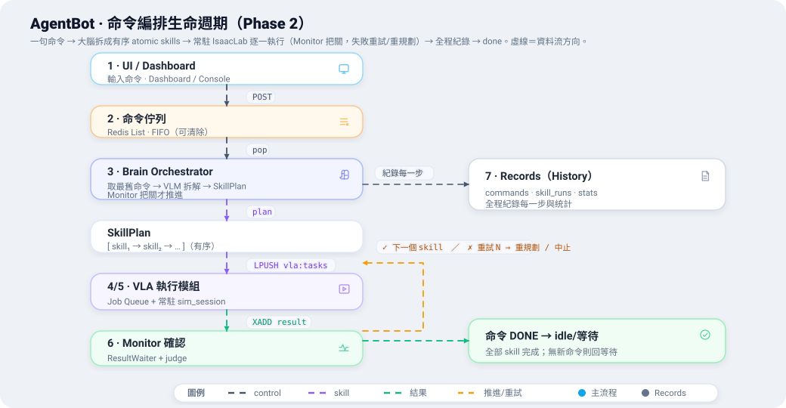
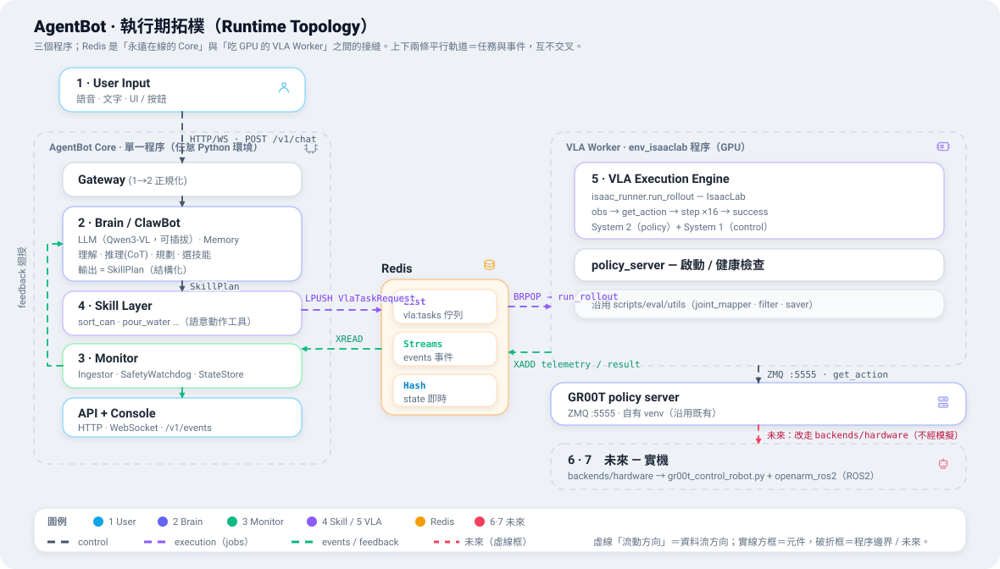
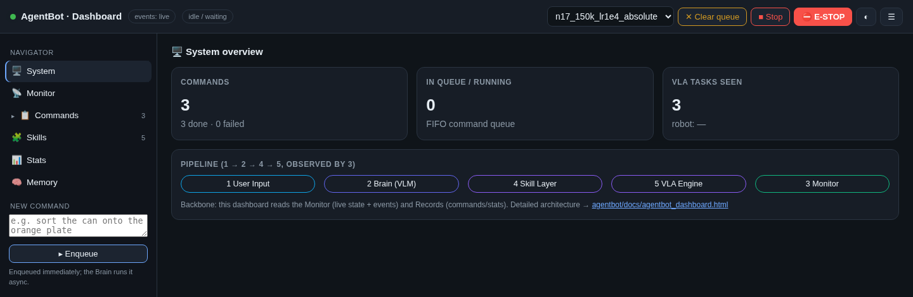

AgentBot 是管控整個 agentic 機器人系統運行的編排層：一句自然語言命令，經 LLM/VLM 大腦推理規劃、拆解成有序的技能，每個技能驅動 GR00T VLA 在 IsaacLab 執行（未來可上實機）；一個 Monitor／事件匯流排觀測全層、收斂回饋與即時安全。它同時掌管 UI 儀表板、Monitor、命令佇列、History／統計。本報告的流程圖皆為動畫：虛線沿箭頭方向流動＝資料流。

是的 —— AgentBot 是整個系統的「控制器」。VLA 執行（區塊 5）沿用既有的 scripts/eval/* + GR00T 伺服器；
AgentBot 把它之上的所有東西包起來並編排：
輸入命令、即時狀態、控制（停止/清除/E-stop）。
理解、推理、規劃，把命令拆成有序 atomic skills。
即時狀態、回饋迴路、即時安全停止、把關技能完成。
可重用、含參數/約束的 atomic skill。
常駐模擬執行；未來換 backend 即上實機。
命令、技能執行、成功率 —— 任務管理系統。

| # | 步驟 | 由誰 |
|---|---|---|
| 1 | UI 送命令 → 入命令佇列（FIFO，輸入框立即清空、可非同步再下、可清除） | POST /v1/commands |
| 2 | 大腦取最舊命令 → VLM 拆解成有序 SkillPlan（多個 atomic skill） | brain/orchestrator.py + agent.plan() |
| 3 | 逐一派 skill → vla:tasks 佇列；等結果（Monitor 把關）才推進下一個 | orchestrator + ResultWaiter |
| 4 | 常駐 sim_session（IsaacLab 全程開著）取出 skill，跑一集到 task_done() | vla/sim_session.py |
| 5 | 成功 → 下一個 skill；失敗 → 重試 N 次 → 仍失敗則大腦重規劃或中止 | orchestrator _run_skill_with_retry / _replan |
| 6 | 全程紀錄（命令/技能/結果/統計）；全部 skill 完成 → 命令 done → 回 idle/等待 | records/store.py |
即時安全：任何 safety 事件且 immediate=true 會同步觸發 SafetyWatchdog（模擬：中止任務；實機：ROS2 e-stop）。
backbone: in-proc 則全部縮成一個程序（免 GPU demo）。↗ 獨立大圖
agentbot/agentbot/
contracts/ ← 協定。跨所有分層的 Pydantic 模型。先讀這個。
common · messages · skills · vla · events · commands
brain/ ← 區塊 2「思考」層
gateway · agent · orchestrator · vlm_client · memory/
skills/ ← 區塊 4。語意動作工具（sort_can, pour_water）+ registry
vla/ ← 區塊 5。GR00T + IsaacLab 執行
sim_session(常駐,Phase 2) · isaac_runner(單次,Phase 1) · policy_server · worker · backends/
monitor/ ← 區塊 3。event_bus · state_store · job_queue · command_queue · results · safety · success_judge · ingest
records/ ← SQLite 任務管理（commands, skill_runs, stats）
api/ ← FastAPI：app · deps(組裝根) · routes_{chat,commands,skills,vla,events}
ui/console.html ← 階層式儀表板（vanilla，掛在 /）
| 模組 | 區塊 | 職責 |
|---|---|---|
contracts/ | — | 協定：UserMessage·SkillPlan·SkillCall·VlaTaskRequest·VlaTaskResult·Event·Command。跨層、序列化成 JSON。 |
brain/orchestrator.py | 2 | 命令迴圈：拆解 → 逐一派 skill → 等結果 → 重試/重規劃 → 紀錄。 |
brain/vlm_client.py | 2 | 可插拔 VLM（預設 Qwen3-VL；可換 gr00t-vlm/claude/openai）。 |
skills/ | 4 | 每個 skill 宣告參數/約束（亦可輸出成 LLM tool schema）、驗證、轉成 VlaTaskRequest。 |
vla/sim_session.py | 5 | 常駐 IsaacLab：開一次、逐一吃 vla:tasks 的 skill、跑到 task_done、發布結果。 |
monitor/ | 3 | 事件匯流排（Redis Streams / in-proc）、即時狀態、命令/工作佇列、ResultWaiter、安全、success_judge。 |
records/store.py | — | 命令/技能執行/統計的 SQLite 紀錄（History + 任務管理）。 |
api/ + ui/ | — | FastAPI 端點 + 階層式儀表板，串起 1·2·4·5 並對外。 |
新手導讀順序： contracts/（詞彙）→ brain/orchestrator.py（命令迴圈）→
vla/sim_session.py（skill 怎麼變成真的一集）→ api/deps.py（怎麼組裝）→ ui/console.html。
掛在 / 的 vanilla 階層式儀表板（無建置鏈，FastAPI 直接服務）：

選 checkpoint、停止編排、清空佇列、緊急停止。
System / Monitor / Commands(可下鑽) / Skills / Stats / Memory。
命令 → 計畫 → 技能執行時間軸（成功/重試/步數）。
即時狀態、事件串流、VLA 遙測圖（WS /v1/events）。
每技能成功率長條圖、命令計數。
非同步排入後端，可連續再下一個。
所有設定都在 config/agentbot.yaml（每個參數在檔內有註解）。兩種模式：
# A) 免 GPU demo（一個程序、假 VLA）— 設 backbone: in-proc，開 http://localhost:8780 uv sync && uv run uvicorn agentbot.api.app:app --port 8780 # B) 真實流程（GPU、4 個程序）— 設 backbone: redis redis-server # 1 匯流排 uv run uvicorn agentbot.api.app:app --port 8780 # 2 Core + 儀表板 + 編排器 cd Isaac-GR00T_n1d7 && source .venv/bin/activate && python -m gr00t.eval.run_gr00t_server \ --model-path <ckpt> --embodiment-tag new_embodiment --port 5555 # 3 GR00T server conda activate env_isaaclab && pip install -e agentbot && cd IsaacLab \ && python -m agentbot.vla.sim_session --headless # 4 常駐 IsaacLab（全程開著）
每個命令、每次技能執行、每個成敗都落地 SQLite（records/），所以系統像一個任務／工作管理系統：
GET /v1/stats）。Monitor（即時，Redis）與 Records（持久，SQLite）刻意分開：前者輕量即時（安全路徑走它），後者是認知/歷史。儀表板讀兩邊。